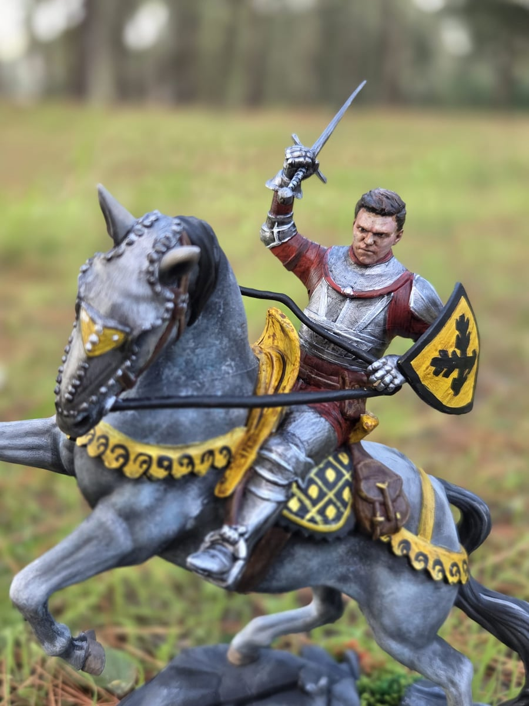
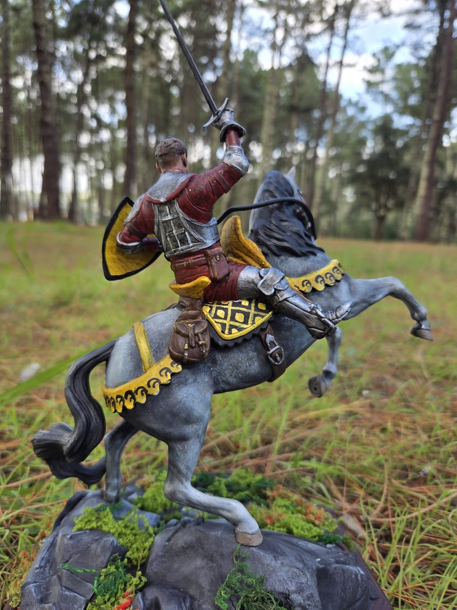
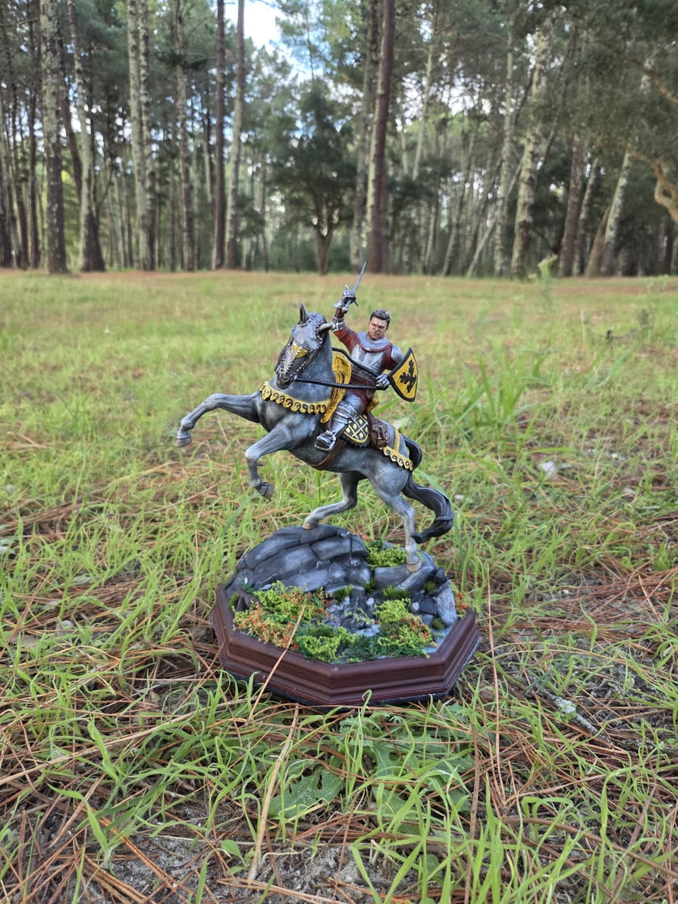
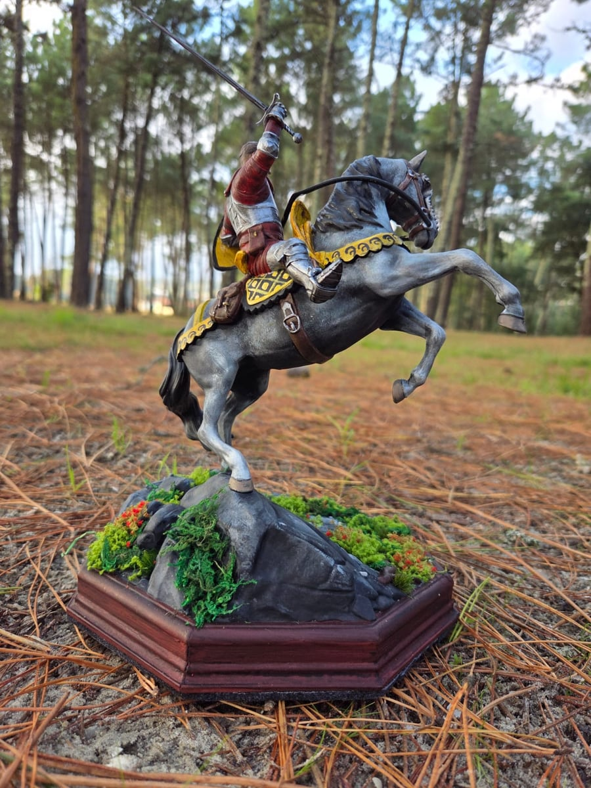

Gallery
Edición especial: Henry a caballo
Pieza inspirada en la Edición Coleccionista de Kingdom Come Deliverance 2. Prefería ver la cara de Henry, sin yelmo, mostrando el esfuerzo de alguien en batalla. El arma que porta es la espada de Sir Radzig, que Henry heredará en el futuro.
Personalmente me gustan los colores de Leipa, por eso escogí amarillos y negros para los arreos del caballo, así como el emblema de Leipa en el escudo que porta Henry. Pinté el caballo con los colores de Pebbles, caballo al que le tengo especial cariño.
Para rematar la figura, añadí elementos para emular arbustos y maleza, dándole mucho más realismo y profundidad a la pieza.




